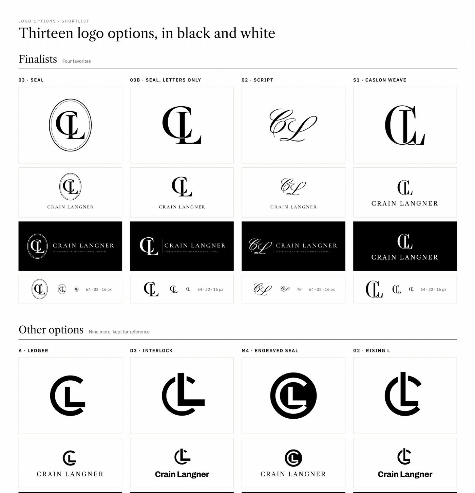
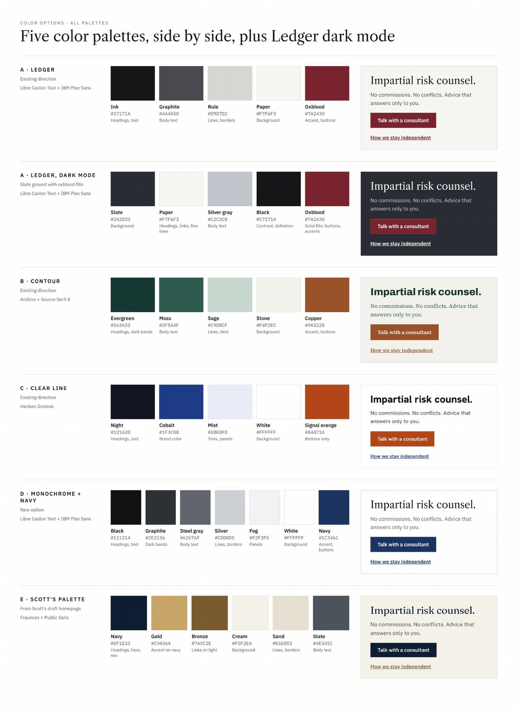
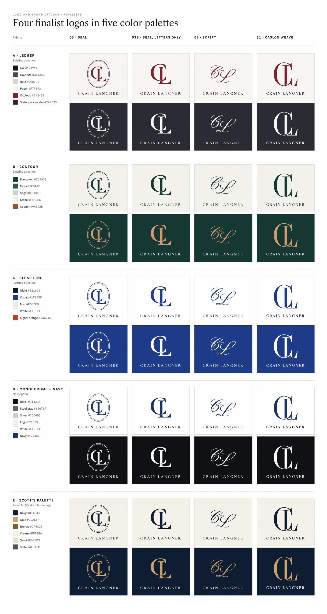
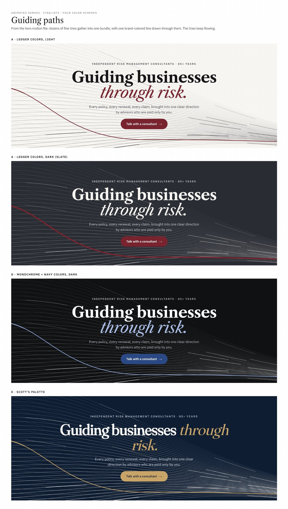
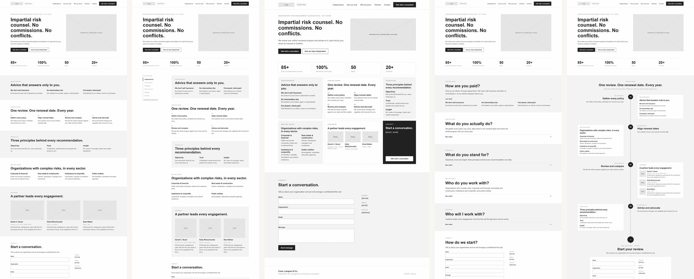
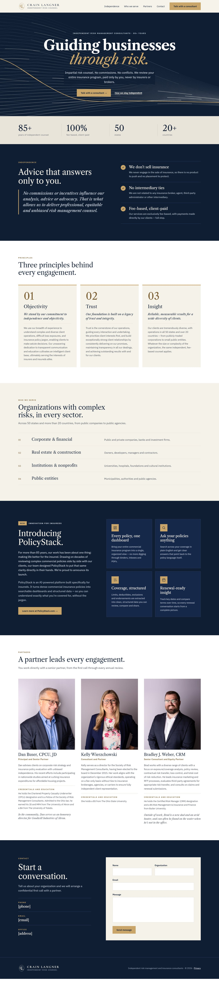
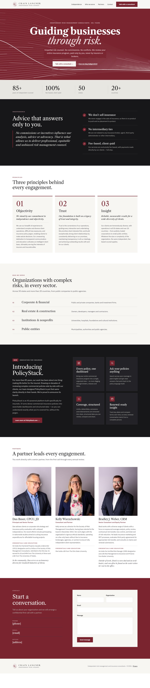
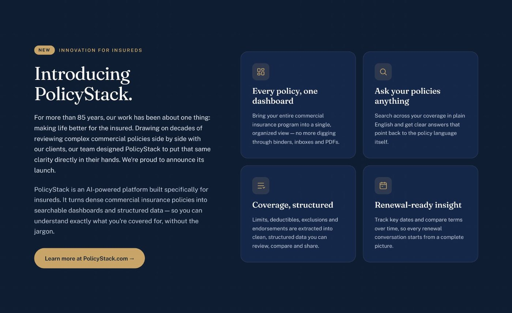

Crain, Langner & Co.
An 85-year-old insurance consultancy had grown entirely by word of mouth and never needed a website. I designed its brand and a single-page site around the one thing most visitors don't know: it takes no commissions, so its advice answers only to the client.
THE OUTCOME
The client chose Navy & Gold: a seal monogram, a navy and gold palette, and an animated hero that says “guiding businesses through risk” without a single stock photo. Independence is now the first thing a visitor reads, not the third paragraph.
THE BRIEF
A logo, a brand mark and a single-page site that feel as serious as a major law or accounting firm.
Crain, Langner & Co. advises businesses and public entities on insurance and risk, from publicly traded companies to cities, bridge authorities and museums, in all 50 states and more than 20 countries. Unlike a broker, it never sells insurance. Clients pay it directly, so its advice has nothing to gain from any policy.
Its only web presence was one page of long paragraphs and abstract 3D shapes, with no navigation and no way to call anyone. Four things made the redesign hard:
01 DISCOVER
The kickoff was built to produce decisions, not impressions.
I prepared about 40 questions across business, audience, brand, website and scope, audited the existing page section by section as keep, change or cut, and scanned the few true fee-only competitors. Three insights shaped everything after.
The kickoff also surfaced a need no website could meet: one place to compare every policy a client holds. I scoped it out of the site rather than letting it bloat the page. The firm's own answer, PolicyStack, now gets its own announcement section instead.
02 BRAND
A mark that blurs in a browser tab fails one of its main jobs.
The concepts ranged from geometric marks built on the client's own C + L sketches to classic monograms. Every one was tested as a mark, a lockup, reversed on dark, and at 64, 32 and 16 pixels before color was allowed to help it. Four serif monograms went forward.

The brief started at greys, black and white. Once the client opened up to color, I built five palettes, each with a type pairing and a real headline and button, so the choice was made on something that looked like the product. Then I set all four finalist logos in all five palettes, light and dark, so the client could compare 40 combinations at a glance instead of imagining them.


03 MOTION
Motion that loops frantically reads as salesy. For a brand built on trust, it had to say something true and then settle.
I set four rules before designing any of it: say something true about the firm, move slowly and come to rest, keep the headline readable at every frame, and show a still frame to anyone who turns off motion. Then I prototyped nine concepts as working animations, from the literal (renewal dates converging on one date, middlemen cut out of the diagram, a scale that settles level once a commission lifts off it) to the atmospheric (contour lines, a dot-matrix head sorting policies into a ledger).
Guiding Paths won because it carries the firm's own value proposition: dozens of directions gathering into one, with a single line drawn through them.
FIVE CONCEPTS WENT FORWARD, EACH REBUILT IN EVERY CANDIDATE PALETTE
04 LAYOUT
The client wanted to nail the layout first, so I took color out of the conversation.
I drew six single-page structures as greyscale wireframes with identical content: stacked sections, a sticky table of contents, sections built around visitors' questions, a grid of tiles, a split screen, and the annual review cycle as the page's backbone. Every option faced the same test: can a first-time visitor find how the firm is paid, and how to reach it, in five seconds?

The white-space debate. An earlier draft felt too airy to the client, while generous spacing is what lets content breathe. I reframed it: scannability comes less from the size of the gaps than from what sits at the top of each section. Every section got a short label, a one-line headline that makes a claim, and content in short chunks, with moderate, consistent gaps. I also built compact, balanced and airy density settings into the prototypes so we could compare them live instead of arguing in the abstract.
05 FINALISTS
Both directions share every section, so the final choice was purely about brand.
A full-bleed animated hero, then a stats strip (85+ years, 100% fee-based, 50 states, 20+ countries), the independence pledge, principles, sectors served, PolicyStack, partner profiles, and a contact section with the phone, email and address the old site was missing. Oxblood is editorial and closest to a law firm; Navy & Gold is classic and premium, and carried forward the palette from an earlier draft.


The site also announces PolicyStack, the firm's new platform that turns dense commercial policies into searchable, structured dashboards. It sits in a distinct dark band so a product launch can live inside a consultancy's site without competing with the core message.

LOOKING BACK
I designed the decision, not just the options. A client who has never commissioned a website can stall when shown everything at once. I sequenced the review so each layer was settled before the next opened: layout in greyscale, logo in black and white, color on real pages, then motion, with the high-fidelity pages last as proof. In each round we sorted options into keep, maybe and cut, and I asked why as well as which.
Breadth is cheap now; curation is the job. I used Claude and Claude Design as a production partner, prototyping logos, palettes and animations as working code. That meant showing nine heroes that actually moved instead of describing them. It made the judgment calls matter more: setting the principles, cutting most of what I made, and keeping every mark original and ownable for the client.
Scannable isn't the opposite of spacious. The spacing debate was really about hierarchy, and treating it that way turned an argument into something we could test.
What I'd do differently: bring a one-page decision summary to every review, so choices are captured in the room rather than reconstructed afterwards.